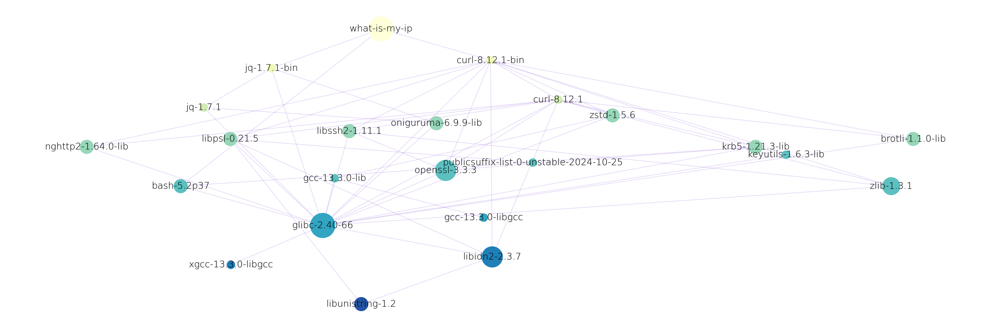

Part 1: Nix, Flakes & Nix
DevShell
Gabriel Nützi, gabriel.nuetzi@sdsc.ethz.ch
Cyril Matthey-Doret, cyril.matthey-doret@epfl.ch
May 8, 2025, Repository, Slides
How to use these slides:
Thanks to the following contributors:
Cyril Matthey-Doret for reviewing the initial draft.
Farid Zakaria for giving the talk at PlanetNix 2025 which we see in the intro.
The Nix Community at
All examples refer to the workshop repository in the root directory.
Ensure that you have installed Nix and direnv.
The basic requirements for working with this repository are:
justnixSee instructions.
🪟 Windows Users: kindly asked to leave this presentation (since Nix is for Unix system) or use WSL Ubuntu.
We will see in a minute!
A domain-specific functional language (no side-effects).
Structurally similar to JSON but with functions.
Supports fundamental data types such as
string, integer, path,
list, and attribute set. See Nix Language Basics.
Lazy evaluated, expression evaluation delayed until needed.
⚠️The Nix language is specifically designed for deterministic/reproducible software deployment.
Nix files have suffix .nix and
contain mostly 1 function.
The function args: ... in file
myfunction.nix takes one argument banana
and
# myfunction.nix
banana:
let
aNumber = 1; # A number.
aList = [ 1 2 3 "help"]; # A list with 4 elements.
anAttrSet = { a = 1; b.c.d = [1]; }; # A nested attribute set.
result = banana.getColor { v = aNumber; }; # Calls another function `args.myFunc`.
in
{ x = aNumber; y = anAttrSet.b.c.d; z = result; }returns an attribute set { x = ... }.
Watch this short introduction for the basic building block.
Verify the next examples in the Nix REPL (Read-Eval-Print-Loop):
nix replor pass std. input to nix eval:
echo '
let a = 3; in a
' | nix eval --file -echo '3' | just evallet # start for "procedural" statements
mult = a: b: a * b;
x10 = mult 10; # Bind the first arg.
in
x10 (mult 8 2)
# -> 160let
f = args: {
a = args.banana + "-nice";
b = args.orange + "-sour";
};
in
f { banana = "1"; orange = "2" }
# -> { a = "1-nice"; b = "2-sour"; }let
f = { ban, ora, ...}: { # Destructuring
a = ban + "-nice";
b = ora + "-sour";
};
in
f { ban = "1"; ora = "2"; berry ="3"; }
# -> { a = "1-nice"; b = "2-sour"; }let
f = list: {
a = builtins.map (x: x*x) list;
};
in f [ 1 3 9 ]
# -> { a = [ 1 9 81 ] }# Concat lists.
[ 1 2 3 ] ++ [ 1 2 3 ]
# [ 1 2 3 1 2 3 ];# Merge attribute sets.
{ a = 1; b = 2; } // { a = 2; c = 3; }
# -> { a = 2; b = 2; c = 3; }rec {
b = 2;
c = b + d:
d = 10;
}
# -> { b = 2; c = 12; d = 10; }# Lazy evaluation.
let
x = abort "fail";
in
if false then x else 42
# -> 42# Import files.
let
myfunc = import ./myfunction.nix;
in myfunc 1 + (import ./other.nix 3)inherit# Inherit 'key = value'.
let
width = 100;
color = "blue";
set = { b = 1; };
in
{
inherit color; # color = color;
inherit (set) b; # b = set.b;
}let
key = "c"
color = "blue";
set = {
c = { v = "hello-${color}" ;}
};
in set.${key}.v
# -> "hello-blue"let
dir = ./.github/workflows; # A path. Nix makes them absolute!
file = "${file}/gh-pages.yaml"; # Interpolated path gets added into the `/nix/store`.
in file
# -> "/nix/store/w9il9gvki2nfdzfc1lrlbiv3xy3mx90a-workflows/gh-pages.yaml"let StatementsDo not reassign in let blocks:
let
a = "hello";
a = a + "world";
# ^
# |
# 🆘 Endless recursion, this is not reassigning.
in a✅ Configure nixd (Nix Language Server) in your IDE
to see “Go to definitions”.
In maths a fix point x of a function f is
defined as:
\[ x = f(x). \]
In functional programming a fix-point combinator
fix is a higher-order function.
It returns the
fix point of a function g:
fix = g: g (fix g)Really?
Apply fix to a function f and see what it
returns:
\[ \underbrace{\text{fix}(f)}_{x} = f( \underbrace{\text{fix}(f)}_{x} ) \]
That is how recursive self-referential sets can be defined.
let
fix = g: g (fix g); # Fix-point combinator.
# Define the constructor.
newSet = self: { path = "/bin"; full = self.path + "/my-app"; };
mySet = fix newEnv; # fulfills: myEnv == fix myEnv;
in
mySet.fullSeems recursive: fix calls fix again
but isn’t 🤯, because its lazy evaluated. More
explanations here.
Used in pkgs.callPackage in nixpkgs.
Put the following in a script whats-is-my-ip.nix:
{
system ? builtins.currentSystem, # Mostly: x86_64-linux
pkgs ?
import (builtins.fetchTarball
"https://github.com/NixOS/nixpkgs/archive/9684b53175fc6c09581e94cc85f05ab77464c7e3.tar.gz") {
inherit system;
},
}:
pkgs.writeShellScriptBin "what-is-my-ip" ''
${pkgs.curl}/bin/curl -s http://httpbin.org/get | \
${pkgs.jq}/bin/jq --raw-output .origin
''Quiz: What returns
builtins.fetchTarball "..."?
nix build -f ./examples/what-is-my-ip.nix --print-out-paths
> "/nix/store/7x9hf9g95d4wjjvq853x25jhakki63bz-what-is-my-ip"Explore whats in this file
/nix/store/7x9hf9g95d4wjjvq853x25jhakki63bz-what-is-my-ip/bin/what-is-my-ip:
#!/nix/store/mc4485g4apaqzjx59dsmqscls1zc3p2w-bash-5.2p37/bin/bash
/nix/store/zl7h70n70g5m57iw5pa8gqkxz6y0zfcf-curl-8.12.1-bin/bin/curl \
-s "http://httpbin.org/get" | \
/nix/store/y50rkdixqzgdgnps2vrc8g0f0kyvpb9w-jq-1.7.1-bin/bin/jq \
--raw-output ".origin"Nix has encoded the executables used by store paths
(/nix/store).
Quiz: Can you share this script with your colleague?
pkgs.writeShellScriptBin "what-is-my-ip" ''
${pkgs.curl}/bin/curl -s http://httpbin.org/get | \
${pkgs.jq}/bin/jq --raw-output .origin
''The pkgs.writeShellScriptBin is a trivial
builder function around the fundamental derivation
command (see ./examples/what-is-my-ip-orig.nix):
derivation {
inherit system;
name = "what-is-my-ip";
builder = "/bin/sh";
args = [
"-c"
''
${pkgs.coreutils}/bin/mkdir -p $out/bin
{
echo '#!/bin/sh'
echo '${pkgs.curl}/bin/curl -s http://httpbin.org/get | \
${pkgs.jq}/bin/jq --raw-output .origin'
} > $out/bin/what-is-my-ip
${pkgs.coreutils}/bin/chmod +x $out/bin/what-is-my-ip
''
];
outputs = [ "out" ];
}Run
nix run github:craigmbooth/nix-visualize -- \
-c tools/configs/nix-visualize/config.ini \
-s nix \
"$(nix build -f ./examples/what-is-my-ip.nix --print-out-paths)"and inspect frame.png.

Quiz: What do you expect
/nix/store/zl7h70n70g5m57iw5pa8gqkxz6y0zfcf-curl-8.12.1-bin/bin/curl
links to and what does your system curl link to?
Use ldd curl to inspect.
You have seen files like flake.nix lying around in
repositories already.
A flake.nix provides
a deterministic way to manage dependencies and configurations in Nix (Slide of the Nix Founder).
comes with a flake.lock file which
locks dependencies.
Remember fetchTarball "..."
in what-is-my-ip.nix which locks pkgs to a
certain commit on the nixpkgs repository, a flake is a
better way to manage locked inputs.
A flake
{
inputs = { /* ... */ };
outputs = inputs: {
packages = /* implementation */
# ... other output attributes ...
}
}Nix can evaluate a flake.nix by
calling the outputs function passing all
inputs.
Try nix repl . to load all outputs
of ./flake.nix in directory ..
Check
outputs.packages.x86_64-linux = { ... }. It is a flat
attribute set of Nix derivations.
A derivation is a
specialized attribute set, describes how to build a Nix package.
{ type = "derivation"; ... }Check nix repl -f <nixpkgs> and type
pkgs.curl.type.
A derivation is an instruction that Nix uses to realize a package. Created using a special
derivationfunction in the Nix language, it can depend on multiple other derivations and produce one or more outputs. The complete set of dependencies required to build a derivation—including its transitive dependencies—is called a closure. [Ref]
When Nix evaluates a derivation, it stores the result in the Nix
store (/nix/store) as a store derivation
(more details).
nix eval "./examples/flake-simple#packages.x86_64-linux.mytool"
> «derivation /nix/store/l8pma77py04gd5819zkk3h7jx0bgxqgm-mytool.drv»./examples/flake-simple#packages.x86_64-linux.mytool is
an installable. More later!
# Inspect the store derivation.
cat /nix/store/l8pma77py04gd5819zkk3h7jx0bgxqgm-mytool.drv> Derive([("out","/nix/store/5rvqlxk2vx0hx1yk8qdll2l8l62pfn8n-treefmt","","")],
[("/nix/store/1fmb3b4cmr1bl1v6vgr8plw15rqw5jhf-treefmt.toml.drv",["out"]),
("/nix/store/3avbfsh9rjq8psqbbplv2da6dr679cib-treefmt-2.1.0.drv",["out"]),
("/nix/store/61fjldjpjn6n8b037xkvvrgjv4q8myhl-bash-5.2p37.drv",["out"]),
("/nix/store/gp6gh2jn0x7y7shdvvwxlza4r5bmh211-stdenv-linux.drv",["out"])]
,["/nix/store/v6x3cs394jgqfbi0a42pam708flxaphh-default-builder.sh"]
,"x86_64-linux","/nix/store/8vpg72ik2kgxfj05lc56hkqrdrfl8xi9-bash-5.2p37/bin/bash",
["-e","/nix/store/v6x3cs394jgqfbi0a42pam708flxaphh-default-builder.sh"],
[ ("__structuredAttrs",""),("allowSubstitutes",""),
("buildCommand","target=$out/bin/treefmt\nmkdir -p \"$(dirname \"$target\")\"\n\nif [ -e \"$textPath\" ]; then\n mv \"$textPath\" \"$target\"\nelse\n echo -n \"$text\" > \"$target\"\nfi\n\nif [ -n \"$executable\" ]; then\n chmod +x \"$target\"\nfi\n\neval \"$checkPhase\"\n"),("buildInputs",""),("builder","/nix/store/8vpg72ik2kgxfj05lc56hkqrdrfl8xi9-bash-5.2p37/bin/bash"),("checkPhase","/nix/store/8vpg72ik2kgxfj05lc56hkqrdrfl8xi9-bash-5.2p37/bin/bash -n -O extglob \"$target\"\n"),("cmakeFlags",""),("configureFlags",""),("depsBuildBuild",""),("depsBuildBuildPropagated",""),("depsBuildTarget",""),("depsBuildTargetPropagated",""),("depsHostHost",""),("depsHostHostPropagated",""),("depsTargetTarget",""),("depsTargetTargetPropagated",""),("doCheck",""),("doInstallCheck",""),("enableParallelBuilding","1"),("enableParallelChecking","1"),("enableParallelInstalling","1"),("executable","1"),("mesonFlags",""),("name","treefmt"),("nativeBuildInputs",""),("out","/nix/store/5rvqlxk2vx0hx1yk8qdll2l8l62pfn8n-treefmt"),("outputs","out"),("passAsFile","buildCommand text"),("patches",""),("preferLocalBuild","1"),("propagatedBuildInputs",""),("propagatedNativeBuildInputs",""),("stdenv","/nix/store/hsxp8g7zdr6wxk1mp812g8nbzvajzn4w-stdenv-linux"),("strictDeps",""),("system","x86_64-linux"),("text","#!/nix/store/8vpg72ik2kgxfj05lc56hkqrdrfl8xi9-bash-5.2p37/bin/bash\nset -euo pipefail\nunset PRJ_ROOT\nexec /nix/store/0jcp33pgf85arjv3nbghws34mrmy7qq5-treefmt-2.1.0/bin/treefmt \\\n --config-file=/nix/store/qk8rqccch6slk037dhnprryqwi8mv0xs-treefmt.toml \\\n --tree-root-file=.git/config \\\n \"$@\"\n\n")])JSON output of the above:
nix derivation show /nix/store/l8pma77py04gd5819zkk3h7jx0bgxqgm-mytool.drv{
"/nix/store/l8pma77py04gd5819zkk3h7jx0bgxqgm-mytool.drv": {
"args": [
"-e",
"/nix/store/vj1c3wf9c11a0qs6p3ymfvrnsdgsdcbq-source-stdenv.sh",
"/nix/store/shkw4qm9qcw5sc5n1k5jznc83ny02r39-default-builder.sh"
],
"builder": "/nix/store/9nw8b61s8lfdn8fkabxhbz0s775gjhbr-bash-5.2p37/bin/bash",
"env": {
"__structuredAttrs": "",
"allowSubstitutes": "",
"buildCommand": "target=$out/bin/mytool\nmkdir -p \"$(dirname \"$target\")\"\n\nif [ -e \"$textPath\" ]; then\n mv \"$textPath\" \"$target\"\nelse\n echo -n \"$text\" > \"$target\"\nfi\n\nif [ -n \"$executable\" ]; then\n chmod +x \"$target\"\nfi\n\neval \"$checkPhase\"\n",
"buildInputs": "",
"builder": "/nix/store/9nw8b61s8lfdn8fkabxhbz0s775gjhbr-bash-5.2p37/bin/bash",
"checkPhase": "/nix/store/9nw8b61s8lfdn8fkabxhbz0s775gjhbr-bash-5.2p37/bin/bash -n -O extglob \"$target\"\n",
"cmakeFlags": "",
"configureFlags": "",
"depsBuildBuild": "",
"depsBuildBuildPropagated": "",
"depsBuildTarget": "",
"depsBuildTargetPropagated": "",
"depsHostHost": "",
"depsHostHostPropagated": "",
"depsTargetTarget": "",
"depsTargetTargetPropagated": "",
"doCheck": "",
"doInstallCheck": "",
"enableParallelBuilding": "1",
"enableParallelChecking": "1",
"enableParallelInstalling": "1",
"executable": "1",
"mesonFlags": "",
"name": "mytool",
"nativeBuildInputs": "",
"out": "/nix/store/blm702jzcwfppwrrj9925ivd9gxp4c9n-mytool",
"outputs": "out",
"passAsFile": "buildCommand text",
"patches": "",
"preferLocalBuild": "1",
"propagatedBuildInputs": "",
"propagatedNativeBuildInputs": "",
"stdenv": "/nix/store/npp9k9062ny7w0k1i03ij6xvqb7vhvjh-stdenv-linux",
"strictDeps": "",
"system": "x86_64-linux",
"text": "#!/nix/store/9nw8b61s8lfdn8fkabxhbz0s775gjhbr-bash-5.2p37/bin/bash\n\"/nix/store/xkk1gr9bw2dbdjna8391rj1zl1l3dmhq-cowsay-3.8.4/bin/cowsay\" \"Hello there ;)\"\necho \"-------------------------------------\"\n\"/nix/store/4ydiim4lfk6nyab4pdkjj9s33pgbigfd-figlet-2.2.5/bin/figlet\" \"Do you expect\"\n\"/nix/store/4ydiim4lfk6nyab4pdkjj9s33pgbigfd-figlet-2.2.5/bin/figlet\" \"something \"\n\"/nix/store/4ydiim4lfk6nyab4pdkjj9s33pgbigfd-figlet-2.2.5/bin/figlet\" \"useful ? \"\n\n"
},
"inputDrvs": {
"/nix/store/1fsd2cb5ab7ci01ks4j0gbbq254jw6sk-stdenv-linux.drv": {
"dynamicOutputs": {},
"outputs": ["out"]
},
"/nix/store/lrf9kbhlaf5mkvnlf3zr9wzvk7c2z72l-bash-5.2p37.drv": {
"dynamicOutputs": {},
"outputs": ["out"]
},
"/nix/store/phq4wh4490manblg905xixpc3gvwr149-figlet-2.2.5.drv": {
"dynamicOutputs": {},
"outputs": ["out"]
},
"/nix/store/wdpicivrj0bmzh935rr1hm1vlk18j0mp-cowsay-3.8.4.drv": {
"dynamicOutputs": {},
"outputs": ["out"]
}
},
"inputSrcs": [
"/nix/store/shkw4qm9qcw5sc5n1k5jznc83ny02r39-default-builder.sh",
"/nix/store/vj1c3wf9c11a0qs6p3ymfvrnsdgsdcbq-source-stdenv.sh"
],
"name": "mytool",
"outputs": {
"out": {
"path": "/nix/store/blm702jzcwfppwrrj9925ivd9gxp4c9n-mytool"
}
},
"system": "x86_64-linux"
}
}A derivation contains only build instructions for Nix to realize/build it. This can be literally anything, e.g. a software package, a wrapper shell script or only source files.
We can build the above derivation - or in other terms realize it in the Nix store - by doing:
nix build -L /nix/store/l8pma77py04gd5819zkk3h7jx0bgxqgm-mytool.drv --print-out-pathsor directly
nix build -L "./examples/simple-flake#packages.x86_64-linux.mytool" \
--print-out-paths --out-link ./mytool✅ Short Form:
nix build "./examples/simple-flake#mytool" which uses
builtins.currentSystem (works also for macOS users).
✅ Inspect tree ./mytool:
/nix/store/blm702jzc...vd9gxp4c9n-mytool
└── bin
└── mytool✅ Run it with:
./mytool/bin/mytool -hnix run "./examples/flake-simple#mytool"The path
./examples/flake-simple#packages.x86_64-linux.mytool is
referred to as a Flake output attribute installable, or simply an installable.
An installable is a Flake output that can be realized in the Nix store.
./examples/flake-simple refers to this
repository’s flake.nix
directory.packages.x86_64-linux.mytool following
# is an output attribute defined within the flake.Most modern Nix commands accept
installables as input, making them a fundamental
concept in working with Flakes. You should only use the modern
commands, e.g. nix <subcommand>. Stay away
from the command nix-env.
Eval/build/run the treefmt utility in the
packages output in flake directory output root directory
Hints:
nix eval --impure --expr 'builtins.currentSystem'packages.${system}.treefmtnix run"github:sdsc-ordes/nix-workshop#..."Its a Nix derivation in the output attribute set
devShells of the flake.nix:
{
inputs = { /* ... */ };
outputs = inputs: {
packages = {
mytool = /* derivation */
};
devShells = {
banana-shell = /* derivation */
};
# ... other output attributes ...
}
}The banana-shell derivation is meant to be consumed by
nix develop.
The flake in ./examples/flake-simple defines
devShells an output:
devShells = forAllSystems (system:
let pkgs = inputs.nixpkgs-unstable.legacyPackages.${system}; in
{
default = pkgs.mkShell {
packages = [ pkgs.skopeo pkgs.cowsay ];
shellHook = ''
echo "Hello from Shell"
${pkgs.cowsay}/bin/cowsay
'';
};
}
);Function pkgs.mkShell makes a derivation consumable by
nix develop:
nix develop "github:sdsc-ordes/nix-workshop?dir=examples/flake-simple#default" --command zshdevenv.shOur best-practice repository templates support
devenv.sh Nix DevShells.
Nix DevShells from nixpkgs
(pkgs.mkShell) are quite raw and sometimes too
simplistic.
Nix DevShells from devenv you can do a looot more
stuff, better. To be continued …
They are configured based on the same mechanism which drives
NixOS (NixOS Modules).
✅ Ask the people who set the
devShell how to extend it if you don’t know yet.
✅ Check the references.
More to come in part 2.
Changing the world of non-reproducible build systems is hard endeavour on its own.
Embrace Nix as tool to give you better reproducibility. The Nix community is always helpful.